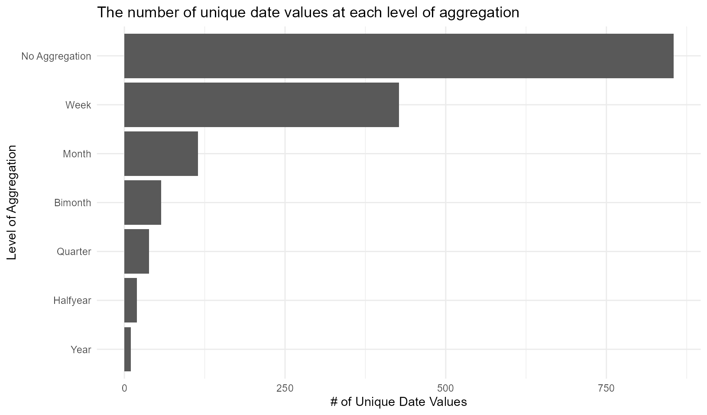

vignettes/visualizing_deidentification_decisions.Rmd
visualizing_deidentification_decisions.RmdThe deidentify package includes two functions to make graphs showing what effect different decisions on aggregating or dropping data has on the number of unique values in that variable: graph_aggregate_dates() and graph_group_rare_values().
In graph_aggregate_dates(), you input a vector of Dates (it must be in Date format) and it will produce a bar group showing how many unique values there are at every level of aggregation: the original dates with no aggregation, aggregated to the week, month, bimonth (every two months), quarter, halfyear (every 6 months), and year. This can be useful when trying to balance between having too precise dates (e.g. the exact date of a crime which may be easy to de-identify) and aggregating to the point of having too few unique dates.
graph_aggregate_dates(as.Date(c("2020-04-15", "2012-08-07", "1996-04-24", "2020-01-22", "2020-01-31", "2020-09-16")))

The second visualization function, graph_group_rare_values() sees what happens when you exclude values from your data that are rarer than k% where k goes from 1% of the data to 99% of the data. For example, imagine that you have the following vector of victim ages: 18, 18, 18, 25, 25, 22, 22, 18, 22, 7. There are 10 numbers with 40% of the data being aged 18, 30% being aged 22, and 20% being aged 25. The final age, 7, only occurs once or 10% of the time. If you were looking to try to re-identify this data, it’d be easiest to do so for the victim who is aged 7 since there is only one of them and multiple people of other ages. So this function can replace rare values in your data (rare being less than the value you set to determine if it is rare or not) with NA or a string (such as “unknown” or “deidentified due to privacy” or anything else you’d like to write) to increase data privacy.
To use this function, you input a vector of strings or numbers into graph_group_rare_values() and it will produce a line graph showing what percent of the non-NA values are removed from the data when excluding any value less than k% of the data, from 1% through 99%. You can use this graph when deciding what limit to set when balancing privacy concerns with excluding too much unique data to be useful to users.
graph_group_rare_values(mtcars$mpg)
